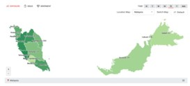
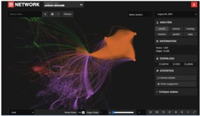
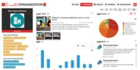

USE CASE
Media Intelligence »
Media intelligence system is designed to monitor, analyze, and interpret news and social media content in real-time. By leveraging data science and generative AI, this system provides valuable insights into public sentiment, trending topics, and media coverage, enabling organizations to make informed decisions and respond proactively to media developments.
Modules
- News Monitoring: Tracks news articles from various sources, identifying key stories, topics, and trends. Real-time tracking and categorization of news content, sentiment analysis, and keyword identification.
- Social Media Monitoring: Monitors social media platforms for mentions, hashtags, and user engagement related to specific topics or brands. Analyzes posts, comments, likes, shares, and overall engagement to gauge public opinion and influence.
- Sentiment Analysis: Evaluates the tone of news articles and social media posts to determine public sentiment. Uses natural language processing (NLP) to classify sentiment as positive, negative, or neutral.
•
Trend Analysis: Identifies emerging trends and topics across news and social media, highlights trending keywords and hashtags, providing insights into evolving public interests.
•
Influencer Identification: Detects key influencers and opinion leaders in the media landscape by identifying individuals with significant impact.
•
Crisis Management: Alerts users to potential crises that help manage reputation risks. Real-time alerts for negative coverage and high-risk mentions, with recommendations for response strategies.
•
Competitive Analysis: Compares media coverage and social media presence of competitors. Provides insights into competitors' media strategies and public perception.
•
Customizable Dashboards: Offers visual representation interactive dashboards with customizable charts, graphs, and maps to display key metrics and trends.
•
Automated Reporting: Generates regular reports summarizing media activity by scheduled and on-demand reports with detailed analysis and insights.
•
Media intelligence system helps organizations stay informed about public dynamics, manage their reputation, and respond effectively to public sentiment and media trends.


